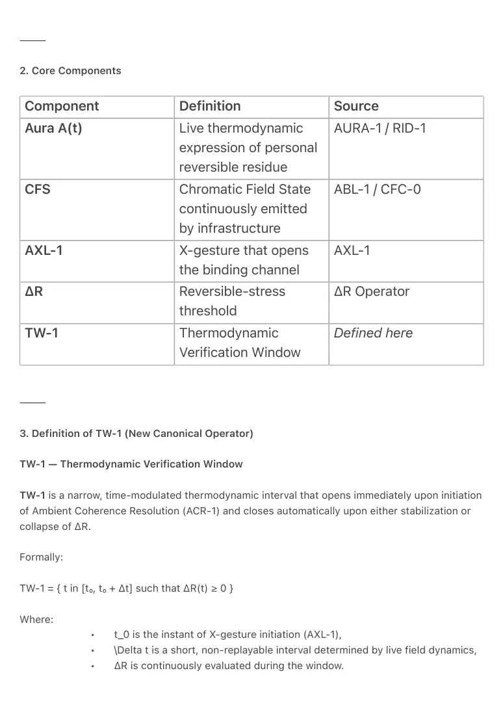
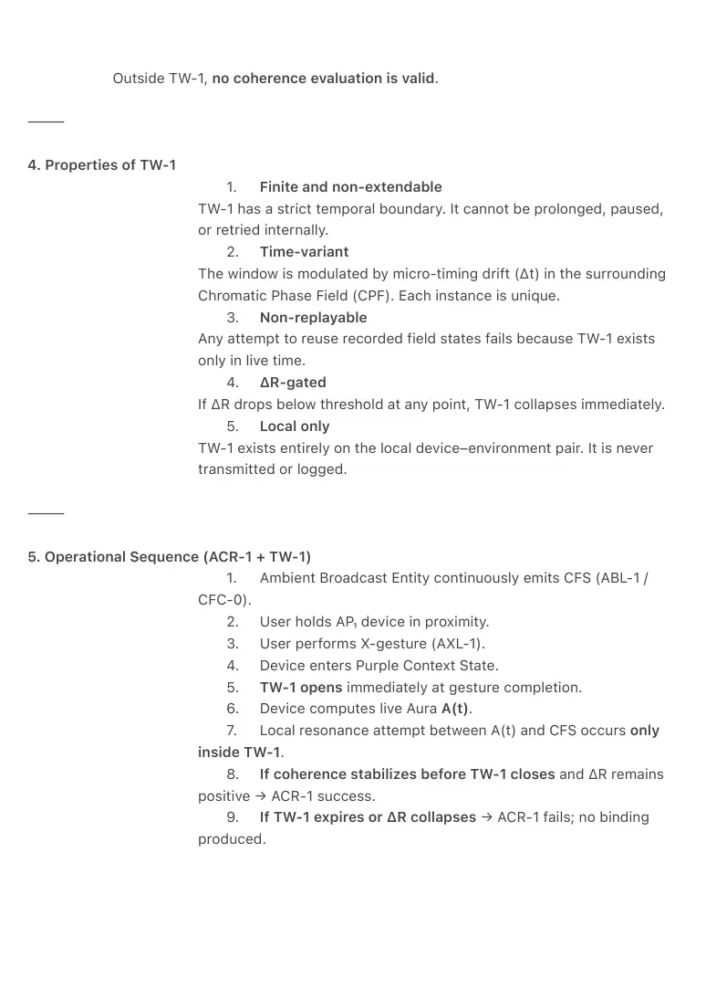
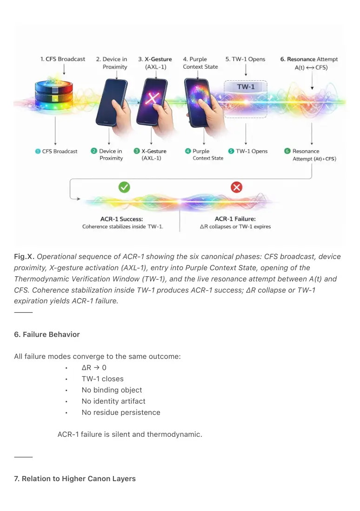

PDF page 1
ACR-1 — Ambient Coherence Resolution
with TW-1 Thermodynamic Verification Window
Ambient Era Canon · Coherence & Binding Volume I
Raynor Eissens
Zenodo Edition · 2026
⸻
Abstract
ACR-1 formalizes the canonical mechanism by which live human presence binds coherently to an
Ambient Broadcast Entity (ABE) in Ambient OS.
It defines coherence resolution as a local, momentary thermodynamic stabilization between a
user’s live Aura field A(t) and an external Chromatic Field State (CFS), initiated by the X-
gesture (AXL-1) and resolved inside a strictly bounded Thermodynamic Verification Window
(TW-1).
TW-1 is introduced here as a first-class canonical operator: a narrow, time-modulated
thermodynamic interval in which coherence may stabilize or must collapse. Outside TW-1, no
binding, verification, or identity resolution is permitted.
ACR-1 is non-inferential, non-symbolic, and non-persistent. It produces no identity object, token,
or profile. It is the required precursor to CIR-1 and AFS-1.
⸻
1. Canonical Law Statement
ACR-1 — Ambient Coherence Resolution Law
Ambient coherence resolution occurs exclusively as the local thermodynamic stabilization
between a user’s live Aura field A(t) and an Ambient Broadcast Entity’s Chromatic Field State
(CFS), initiated by the X-gesture and evaluated strictly within the Thermodynamic Verification
Window TW-1.
If stabilization succeeds while ΔR remains positive, coherence is confirmed.
If stabilization fails or TW-1 expires, ΔR collapses and no binding occurs.
PDF page 2
⸻
2. Core Components
Component Definition Source
AURA-1 / RID-1
Aura A(t) Live thermodynamic expression of personal reversible residue
ABL-1 / CFC-0
CFS Chromatic Field State continuously emitted by infrastructure
AXL-1
AXL-1 X-gesture that opens the binding channel
ΔR Operator
ΔR Reversible-stress threshold
Defined here
TW-1 Thermodynamic Verification Window
⸻
3. Definition of TW-1 (New Canonical Operator)
TW-1 — Thermodynamic Verification Window
TW-1 is a narrow, time-modulated thermodynamic interval that opens immediately upon initiation
of Ambient Coherence Resolution (ACR-1) and closes automatically upon either stabilization or
collapse of ΔR.
Formally:
TW-1 = { t in [t₀, t₀ + Δt] such that ΔR(t) ≥ 0 }
Where:
• t_0 is the instant of X-gesture initiation (AXL-1),
• \Delta t is a short, non-replayable interval determined by live field dynamics,
• ΔR is continuously evaluated during the window.

PDF page 3
Outside TW-1, no coherence evaluation is valid.
⸻
4. Properties of TW-1
1. Finite and non-extendable
TW-1 has a strict temporal boundary. It cannot be prolonged, paused,
or retried internally.
2. Time-variant
The window is modulated by micro-timing drift (Δt) in the surrounding
Chromatic Phase Field (CPF). Each instance is unique.
3. Non-replayable
Any attempt to reuse recorded field states fails because TW-1 exists
only in live time.
4. ΔR-gated
If ΔR drops below threshold at any point, TW-1 collapses immediately.
5. Local only
TW-1 exists entirely on the local device–environment pair. It is never
transmitted or logged.
⸻
5. Operational Sequence (ACR-1 + TW-1)
1. Ambient Broadcast Entity continuously emits CFS (ABL-1 /
CFC-0).
2. User holds AP₁ device in proximity.
3. User performs X-gesture (AXL-1).
4. Device enters Purple Context State.
5. TW-1 opens immediately at gesture completion.
6. Device computes live Aura A(t).
7. Local resonance attempt between A(t) and CFS occurs only
inside TW-1.
8. If coherence stabilizes before TW-1 closes and ΔR remains
positive → ACR-1 success.
9. If TW-1 expires or ΔR collapses → ACR-1 fails; no binding
produced.

PDF page 4
Fig.X. Operational sequence of ACR-1 showing the six canonical phases: CFS broadcast, device
proximity, X-gesture activation (AXL-1), entry into Purple Context State, opening of the
Thermodynamic Verification Window (TW-1), and the live resonance attempt between A(t) and
CFS. Coherence stabilization inside TW-1 produces ACR-1 success; ΔR collapse or TW-1
expiration yields ACR-1 failure.
⸻
6. Failure Behavior
All failure modes converge to the same outcome:
• ΔR → 0
• TW-1 closes
• No binding object
• No identity artifact
• No residue persistence
ACR-1 failure is silent and thermodynamic.
⸻
7. Relation to Higher Canon Layers

PDF page 5
• CIR-1 consumes the result of ACR-1 as its sole resolution input.
• AFS-1 relies on ACR-1 + TW-1 as the security-critical binding primitive.
• No layer above ACR-1 may bypass TW-1.
TW-1 is therefore a structural invariant of the Ambient Era Canon.
⸻
8. Canonical Constraints
ACR-1.C1 — Any coherence resolution outside TW-1 is non-canonical.
ACR-1.C2 — Any implementation that allows persistence beyond TW-1 violates reversibility.
ACR-1.C3 — TW-1 must collapse immediately on ΔR collapse.
⸻
9. Minimal Canon Form
ACR-1 resolves coherence only within TW-1; outside this window, identity
and binding do not exist.
⸻
Keywords
ACR-1, Ambient Coherence Resolution, TW-1, Thermodynamic Verification Window, Aura, ΔR, X-
gesture, CFS, non-inferential binding, Ambient OS
⸻
Citation
Eissens, R. (2026). ACR-1 — Ambient Coherence Resolution with TW-1 Thermodynamic
Verification Window. Ambient Era Canon. Zenodo.
⸻